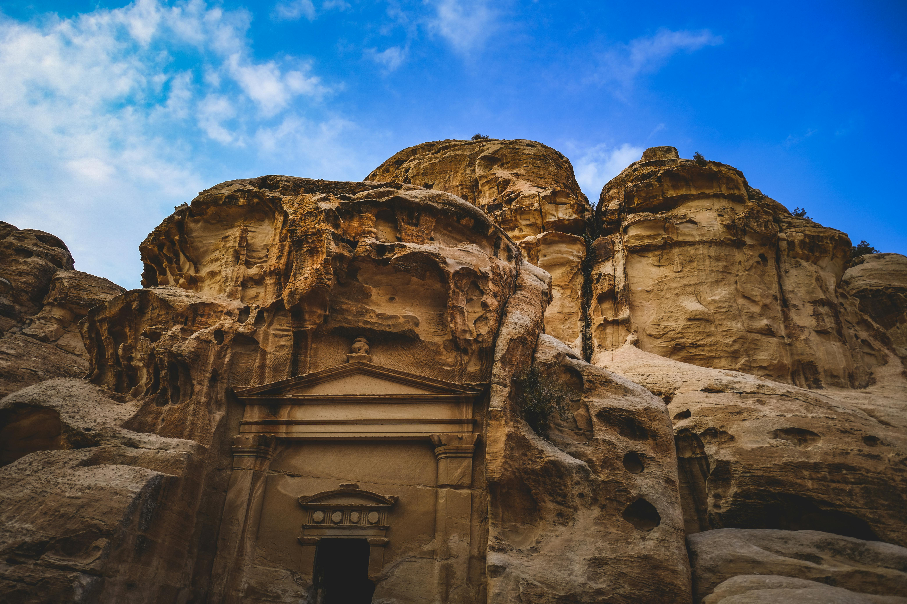
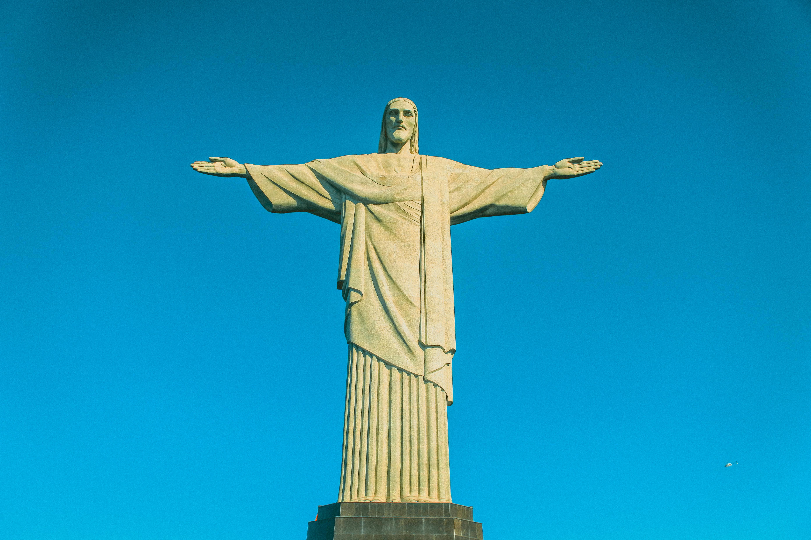
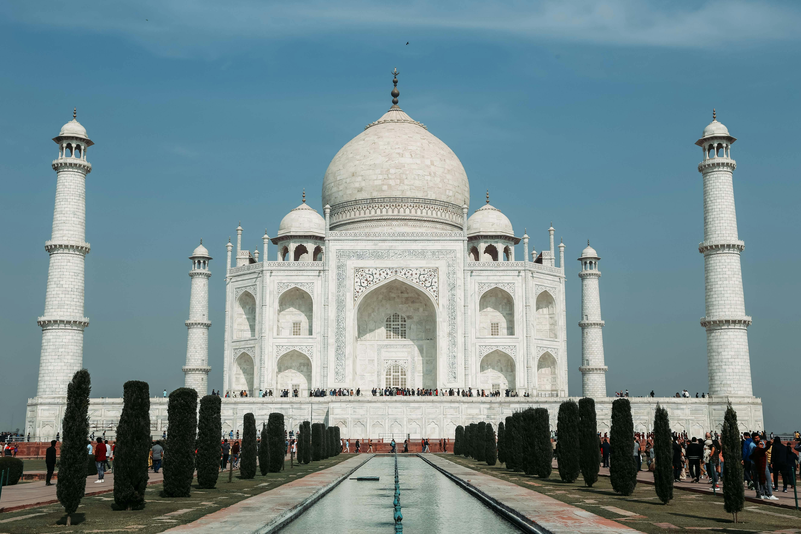

Great might be an understatement. One of the world’s largest building-construction projects, the Great Wall of China is widely thought to be about 5,500 miles (8,850 km) long; a disputed Chinese study, however, claims the length is 13,170 miles (21,200 km). Work began in the 7th century BCE and continued for two millennia. Although called a “wall,” the structure actually features two parallel walls for lengthy stretches.In addition, watchtowers and barracks dot the bulwark. One not-so-great thing about the wall, however, was its effectiveness.
Chichen Itza is a Mayan city on the Yucatán Peninsula in Mexico, which flourished in the 9th and 10th centuries CE. Under the Mayan tribe Itzá—who were strongly influenced by the Toltecs—a number of important monuments and temples were built. Among the most notable is the stepped pyramid El Castillo (“The Castle”), which rises 79 feet (24 meters) above the Main Plaza. A testament to the Mayans’ astronomical abilities, the structure features a total of 365 steps, the number of days in the solar year.
The ancient city of Petra, Jordan, is located in a remote valley, nestled among sandstone mountains and cliffs. It was purported to be one of the places where Moses struck a rock and water gushed forth. Later the Nabataeans, an Arab tribe, made it their capital, and during this time it flourished, becoming an important trade center, especially for spices. Noted carvers, the Nabataeans chiseled dwellings, temples, and tombs into the sandstone, which changed color with the shifting sun. In addition, they constructed a water system that allowed for lush gardens and farming.

This Incan site near Cuzco, Peru, was “discovered” in 1911 by Hiram Bingham, who believed it was Vilcabamba, a secret Incan stronghold used during the 16th-century rebellion against Spanish rule. Although that claim was later disproved, the purpose of Machu Picchu has confounded scholars. Bingham believed it was home to the “Virgins of the Sun,” women who lived in convents under a vow of chastity. Others think that it was likely a pilgrimage site, while some believe it was a royal retreat.One thing it apparently should not be is the site of a beer commercial.
Christ the Redeemer, a colossal statue of Jesus, stands atop Mount Corcovado in Rio de Janeiro. Its origins date to just after World War I, when some Brazilians feared a “tide of godlessness.” They proposed a statue, which was ultimately designed by Heitor da Silva Costa, Carlos Oswald, and Paul Landowski. Construction began in 1926 and was completed five years later. The resulting monument stands 98 feet (30 meters) tall—not including its base, which is about 26 feet (8 meters) high—and its outstretched arms span 92 feet (28 meters).

The Colosseum in Rome was built in the first century by order of the Emperor Vespasian. A feat of engineering, the amphitheater measures 620 by 513 feet (189 by 156 meters) and features a complex system of vaults. It was capable of holding 50,000 spectators, who watched a variety of events. Perhaps most notable were gladiator fights, though men battling animals was also common. In addition, water was sometimes pumped into the Colosseum for mock naval engagements. However, the belief that Christians were martyred there—namely, by being thrown to lions—is debated.
The Taj Mahal is an ivory-white marble mausoleum on the right bank of the river Yamuna in Agra, Uttar Pradesh, India. It was commissioned in 1631 by the fifth Mughal emperor, Shah Jahan to house the tomb of his beloved wife, Mumtaz Mahal; it also houses the tomb of Shah Jahan himself. The tomb is the centrepiece of a 17-hectare (42-acre) complex, which includes a mosque and a guest house, and is set in formal gardens bounded on three sides by a crenellated wall. Construction of the mausoleum was completed in 1648, but work continued on other phases of the project for another five years.